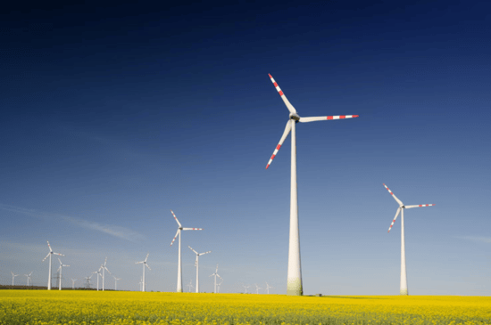
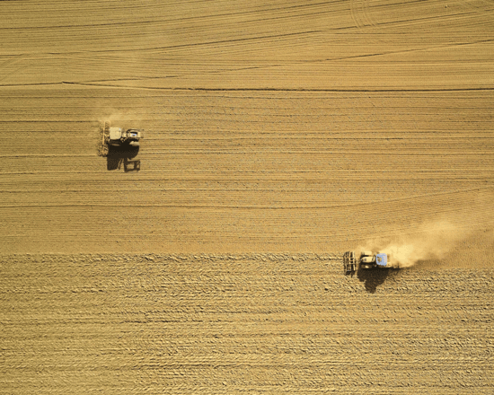
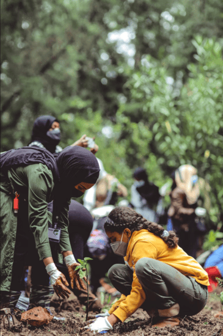
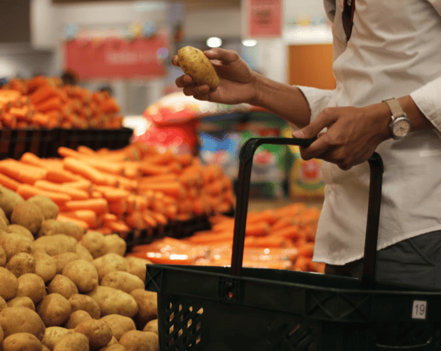

In this webpage, we hope to introduce you to the sustainability side of reducing the number of hungry people worldwide. This is sometimes not talked about enough but ensuring sustainability through innovative solutions and initiatives is very important. Doing so would help alleviate hunger more reliably and consistently by allowing more people to get a hearty and well balanced diet. But it would also reduce our effect on the climate and reduce the strain.


As of right now, agriculture is not sustainable in the long term. Our way of agriculture is literally eating up the planet and consuming its resources at a rapid rate. If such trends continue, agriculture may encounter setbacks and lead back to hunger around the world again.
What is being done about this? There are many things being done by multiple agencies
both big and small. By following certain initiatives, certain targets can be reached
that can all compound into making agriculture sustainable for all people. Such initiatives include promoting local communities of farmers in
rural enviroments, promoting resilient farming practices that also help local ecosystems and many more.


What can you as an individual do in this? One simple way is to support your local farmers by buying produce/products in your local farmers market. That way you can support your local farmers and promote sustainability in your region.